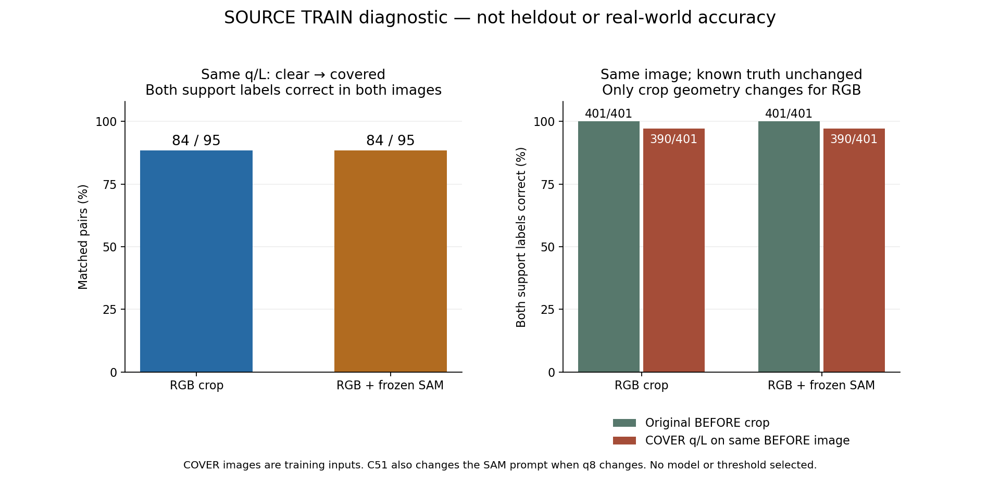
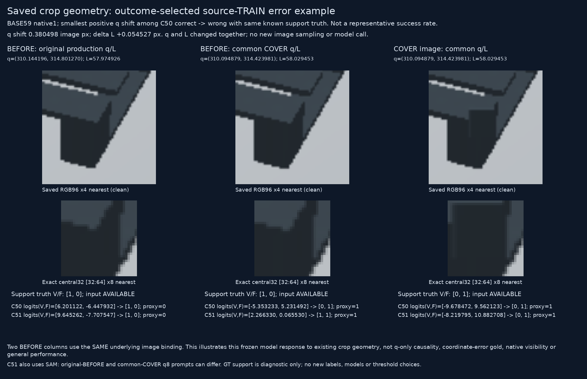

소스 TRAIN 진단입니다. 실사 성능 개선·최종 모델 채택은 미확인입니다. 새 학습 0회, 현재 평가 223장·공개 heldout·합성 VAL 신규 접근 0회, PnP·기존 원본 q/L 변경 0회입니다. 새 진단 입력은 기존 COVER 초기 추론 q/L을 4개 저장 이미지에 고정한 별도 입력이며 원래 production replay가 아닙니다.
전체 128개 TRAIN base × 4 variant × native8 = 4,096행을 보존했습니다. 기준 COVER crop 1,024개는 원래 저장된 RGB·valid와 byte 일치했고, SAM 입력과 기존 COVER 모델 점수도 일치했습니다. COVER의 원 U24개가 4variant에 반복되어 진단 입력 U96개(2.34%)입니다. U와 정답 UNKNOWN은 다릅니다.
정답이 [보임, 외부 가림] = [1,0] → [0,1]인 95쌍 중, 두 모델 각각 84쌍에서 전후 두 항목을 모두 맞췄습니다. 두 모델이 함께 맞춘 공통 사례는 81쌍이며, 오류 사례가 완전히 같지는 않습니다. 각 모델의 나머지 11쌍은 가리기 전부터 적어도 한 항목이 틀렸습니다. 이 값은 학습 이미지의 반응 진단이며 새 장면 일반화 성능이 아닙니다.

같은 BEFORE 원본 이미지에서 원 q/L 대신 COVER q/L로 자른 경우, 정답이 그대로인 알려진 401행 중 두 모델 각각 11행에서 맞던 판정이 틀렸습니다. 각 4행은 q 이동 1px 이하, 각 9행은 3px 이하입니다. q와 L이 함께 달라졌으므로 위치 이동만의 효과로 분리한 결과는 아닙니다. RGB 모델은 SAM 입력이 없어 crop 기하 변화만의 민감성이고, SAM 모델은 prompt box 변화도 함께 포함합니다.
아래는 C50 정답→오답 사례 중 양의 q 이동이 가장 작은 TRAIN 사례입니다. 결과를 보고 선택한 오류 설명용 예시이며 대표 성공률을 뜻하지 않습니다. 같은 원본 이미지에서 q 이동 약 0.3805px, L 변화 약 +0.0545px만으로 RGB 모델은 [1,0]에서 [0,1]로 바뀌었습니다.

결과와 무관하게 정한 8개 factor 조합·256 crop 보기
두 support는 독립이며 동시에 YES일 수 있습니다. CM은 정답 NO/YES 행, 예측 NO/YES/U 열입니다. Self·등록 불확실·해당 끝부위 증거 부족은 UNKNOWN으로 남겼고 외부 가림 음성으로 바꾸지 않았습니다.
| 모델 | 항목 | 정답 known | 정답 UNKNOWN | YES precision | YES recall | 혼동행렬 |
|---|---|---|---|---|---|---|
| RGB crop | 끝부위 보임 | 3007 | 1089 | 100.0% | 98.3% | [[121, 0, 0], [50, 2836, 0]] |
| RGB crop | 끝부위 외부 가림 | 1633 | 2463 | 76.8% | 98.6% | [[1454, 41, 0], [2, 136, 0]] |
| RGB + frozen SAM | 끝부위 보임 | 3007 | 1089 | 100.0% | 98.9% | [[121, 0, 0], [31, 2855, 0]] |
| RGB + frozen SAM | 끝부위 외부 가림 | 1633 | 2463 | 80.5% | 98.6% | [[1462, 33, 0], [2, 136, 0]] |
합성의 재질과 형태는 서로 다른 요인입니다. 이 표는 사용자 실사 목재/정사각형 평가표를 대체하지 않습니다.
| 소스 그룹 | 모델 | known | UNKNOWN | YES precision | YES recall |
|---|---|---|---|---|---|
| material:DARK_POLYMER | RGB crop | 818 | 1230 | 70.1% | 98.6% |
| material:DARK_POLYMER | RGB + frozen SAM | 818 | 1230 | 71.6% | 98.6% |
| material:PROCEDURAL_WOOD | RGB crop | 815 | 1233 | 85.0% | 98.6% |
| material:PROCEDURAL_WOOD | RGB + frozen SAM | 815 | 1233 | 91.9% | 98.6% |
| aspect:RECTANGULAR | RGB crop | 882 | 1166 | 76.0% | 97.3% |
| aspect:RECTANGULAR | RGB + frozen SAM | 882 | 1166 | 86.9% | 97.3% |
| aspect:SQUARE | RGB crop | 751 | 1297 | 77.8% | 100.0% |
| aspect:SQUARE | RGB + frozen SAM | 751 | 1297 | 74.1% | 100.0% |
알려진 가림 전이 95쌍 모두 RGB가 달랐습니다. 바뀐 crop RGB 픽셀 수는 최소 203개·중앙값 657개이며, 해당 끝부위만의 대비 측정은 아닙니다. 전체 입력에서 byte가 같은데 알려진 support 정답이 반대인 충돌은 발견되지 않았습니다. 이것만으로 사람이거나 모델이 안정적으로 구별할 수 있다고 증명되지는 않습니다.
Pallox는 전체 322장 중 마스크가 있는 290장, 없는 32장을 구분했고, 미리 고정한 8쌍의 원본 16파일을 공식 크기·MD5·SHA로 검증했습니다. 실제 마스크는 앞의 cardboard를 제외하는 경계가 있지만 일부 포크 구멍을 채우고 내부 내용물의 의미도 모호합니다. 전체 bin의 보조 마스크로도 정의를 먼저 정해야 하며 native/end/외부/자기 가림 정답으로 바로 사용하지 않습니다. 이번 학습 편입 0회입니다.
학습 소스에서 확인한 crop 민감성을 줄이도록 같은 q의 가림 전후·비가림 대조와 작은 q/L 변화에 대한 감독을 구성하는 것이 다음 단계입니다. crop을 바꾸면 support 정답도 다시 계산하고, 모호한 공개 마스크 영역은 강한 정답으로 넣지 않습니다. 기존 평가셋이나 반복 사용한 VAL의 결과를 데이터·모델·문턱 선택에 사용하지 않습니다. 자연 실사에서 믿을 만한 외부 가림 판별은 아직 입증하지 못했습니다.